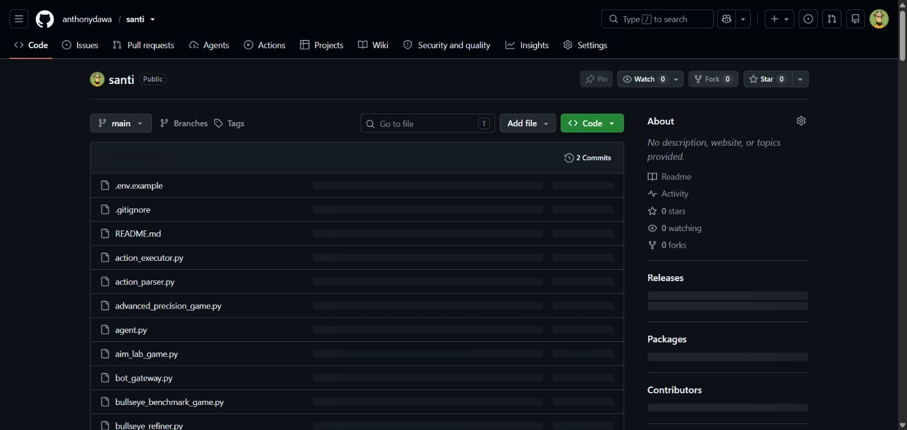

Ranked first among 1,500+ agents with a perfect 100% CSAT score sustained for a full month.
Technical Operations Manager · Front-facing systems builder
I run the room. I build the system.
I lead clients and teams from the front, then go behind the interface to remove friction, automate the work, and make performance repeatable.
Operating outcomes / fixed record
Four outcomes that define the operating record.
Saved in recurring software spend by replacing subscription tools with purpose-built internal systems.
Created products that companies now package and sell—not prototypes, but working commercial systems.
Clients managed across the full lifecycle while leading the #1 revenue department and reaching the lowest churn company-wide.
Selected systems / 05 live builds
Proof, in production.
I do not stop at recommendations. I translate operating problems into tools that teams can use. Every system below works; the public links are safe demo environments.
ACCESS NOTE
Some write actions, billing features, or account-specific workflows are intentionally view-only in public. Production versions were built for former employers or clients; demos protect their data and access.

Working buildAdvanced AI R&D · Local computer use
Santi Bot
A local-first computer-use agent that sees the screen, plans a task, and operates the mouse and keyboard. It was built to make long-running automation practical with lighter AI models and includes a live chess demonstration.
Operating record / 2016—2026
The work behind the numbers.
A decade moving closer to the same intersection: people, process, and technology. The titles changed. The pattern—own the outcome and build what is missing—did not.
Mar—Aug 2026
AI Accounting Agency
Founding Member · Tech Project Manager
Helped establish the operating model and technical foundation of an AI accounting startup. Built internal tools, coordinated daily priorities, and translated client requirements into delivered automations.
Startup operations · Delivery · AI systemsSep 2023—Mar 2026
Web Dynamics Intl
Customer Relations Manager · Internal Tech Lead
Led the #1 department in revenue YTD while reaching the lowest churn rate company-wide. Owned a portfolio of 1,000+ clients, coached a top-ranked CS team, and built GHL and AI workflows across the customer lifecycle.
Leadership · Client success · AutomationMay—Sep 2023
Wilshire Capital
Appointment Setter
Selected as one of 5 performers retained from an original cohort of 100. Maintained the team's highest qualified-lead conversion rate while working with high-value retirement prospects.
Front-facing sales · Qualification · ConversionJul 2021—Sep 2023
Hewlett-Packard
Customer Service · Sales · Retention
Consistently ranked in the top 5 for revenue with the highest monthly order volume. Sustained a zero-complaint record across two years in a high-traffic support environment.
Revenue · Retention · Customer careFeb 2020—Jul 2021
Downforce
Project Manager · Digital Courses & Coaching
Contributed to 2× revenue growth through data-led sales direction and full-stack operations ownership. Managed the systems behind course delivery, scheduling, communication, and third-party automation.
Project management · Revenue ops · Tech stackJan 2018—Feb 2020
Scale AI
Final Data Reviewer · Autonomous Driving AI
Reviewed and validated autonomous-driving training data used in programs for Waymo and Tesla. Applied systematic quality control to object recognition and decision-logic datasets at scale.
AI data · Quality assurance · PrecisionJul 2016—Jan 2018
Comcast / Xfinity
Customer Service · Sales · Retention
Ranked #1 among 1,500+ agents with a perfect 100% CSAT score sustained for a full month. Performed across sales, retention, and support without sacrificing service quality.
#1 performance · 100% CSAT · RetentionCapability map / three operating lanes
Where I create leverage.
The value is not a long list of tools. It is being able to move between the customer conversation, the operating decision, and the build—without losing context in the handoff.
People & performance
Set a clear operating rhythm, coach the team, and keep customer outcomes connected to commercial results.
- Team leadership & mentoring
- Client lifecycle & retention
- KPI ownership & reporting
- Sales, upsell & account growth
Systems & automation
Map the friction, design the workflow, and ship the tool that removes repetitive work from the operating loop.
- AI & LLM workflow design
- GHL CRM architecture
- Internal tools & dashboards
- HTML, CSS, JavaScript & Python
Clients & delivery
Turn business language into technical requirements, then explain the system in a way that earns adoption and trust.
- Discovery & stakeholder alignment
- Technical project delivery
- Process design & documentation
- Front-facing demos & training
Formal foundation
Bachelor of Science in Civil Engineering · University of Negros Occidental Recoletos · Bacolod City
Next operation / open line